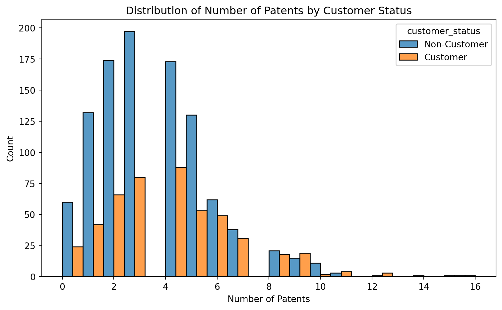
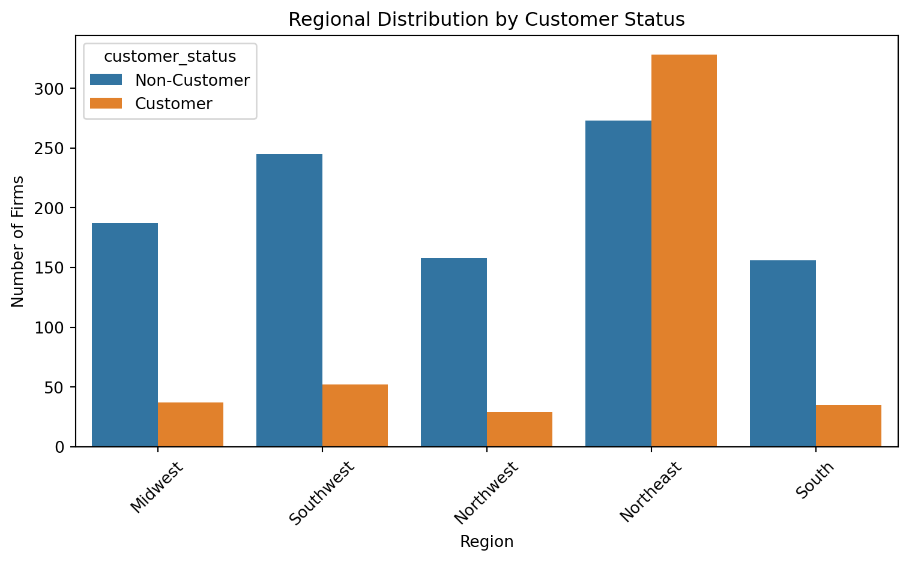
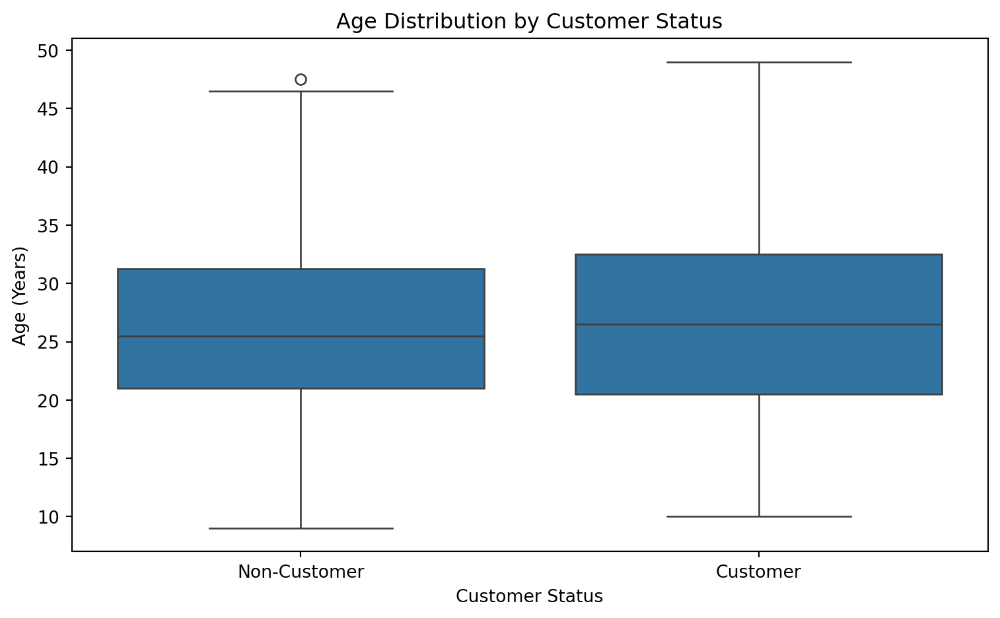
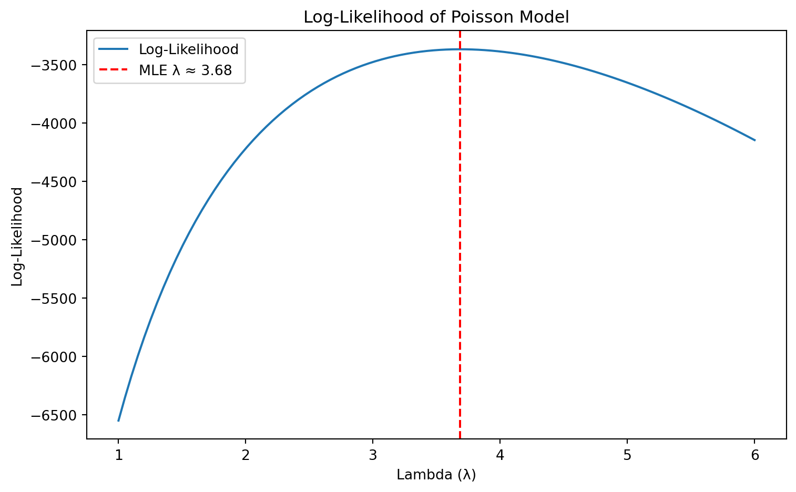
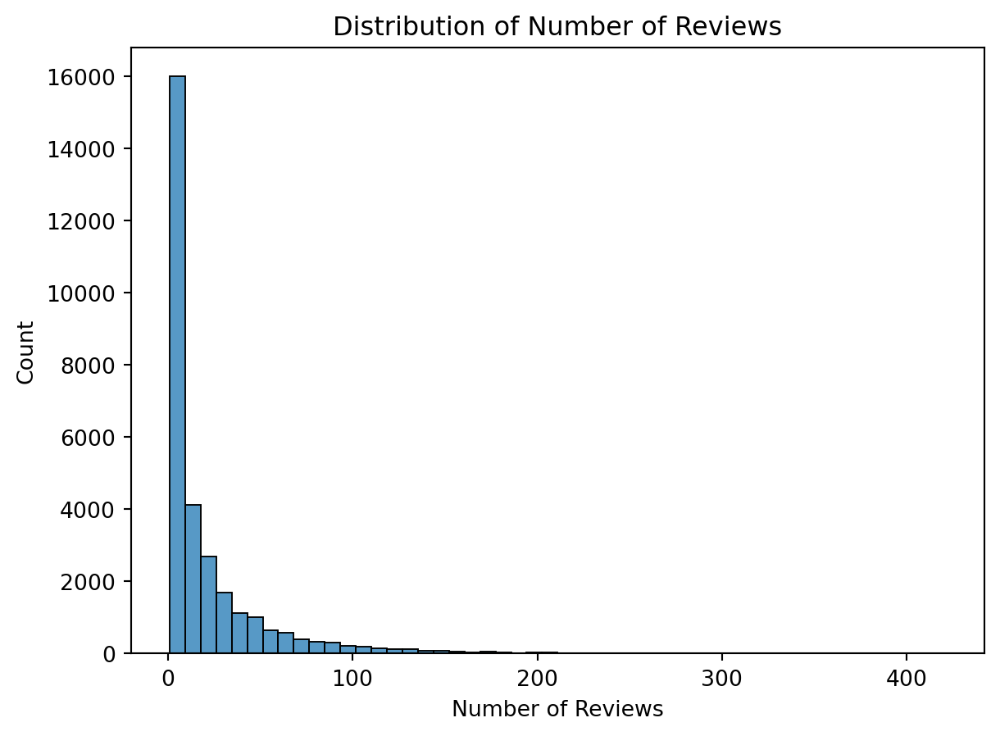
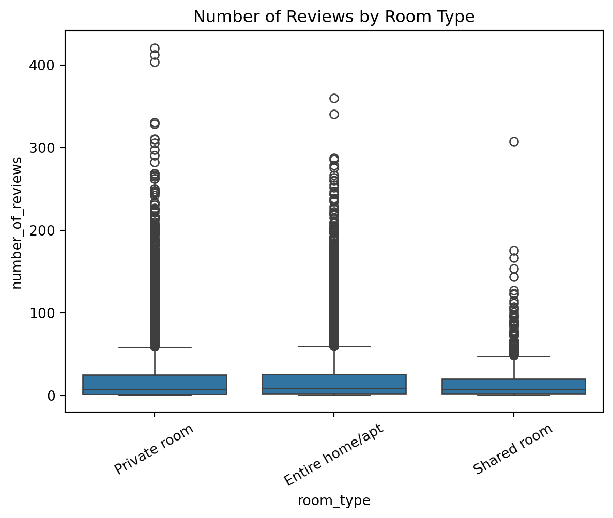

| patents | region | age | iscustomer | |
|---|---|---|---|---|
| 0 | 0 | Midwest | 32.5 | 0 |
| 1 | 3 | Southwest | 37.5 | 0 |
| 2 | 4 | Northwest | 27.0 | 1 |
| 3 | 3 | Northeast | 24.5 | 0 |
| 4 | 3 | Southwest | 37.0 | 0 |
Poisson Regression Examples
Blueprinty Case Study
Introduction
Blueprinty is a small firm that makes software for developing blueprints specifically for submitting patent applications to the US patent office. Their marketing team would like to make the claim that patent applicants using Blueprinty’s software are more successful in getting their patent applications approved. Ideal data to study such an effect might include the success rate of patent applications before using Blueprinty’s software and after using it. Unfortunately, such data is not available.
However, Blueprinty has collected data on 1,500 mature (non-startup) engineering firms. The data include each firm’s number of patents awarded over the last 5 years, regional location, age since incorporation, and whether or not the firm uses Blueprinty’s software. The marketing team would like to use this data to make the claim that firms using Blueprinty’s software are more successful in getting their patent applications approved.
Data

| mean | std | count | |
|---|---|---|---|
| customer_status | |||
| Customer | 4.133056 | 2.546846 | 481 |
| Non-Customer | 3.473013 | 2.225060 | 1019 |
Key Findings: Patent Counts by Customer Status
- Blueprinty customers had a higher average number of patents (4.13) compared to non-customers (3.47).
- The distribution of patent counts shows that customers are more likely to have larger patent portfolios, with a noticeable rightward skew.
- This suggests a potential positive association between using Blueprinty’s software and a firm’s patent productivity.
- However, this is a descriptive comparison. Further modeling is needed to determine whether the customer status is causally associated with higher patent counts, or if it’s confounded by other variables such as region or firm age.
Blueprinty customers are not selected at random. It may be important to account for systematic differences in the age and regional location of customers vs non-customers.


| count | mean | std | min | 25% | 50% | 75% | max | |
|---|---|---|---|---|---|---|---|---|
| customer_status | ||||||||
| Customer | 481.0 | 26.900208 | 7.814678 | 10.0 | 20.5 | 26.5 | 32.50 | 49.0 |
| Non-Customer | 1019.0 | 26.101570 | 6.945426 | 9.0 | 21.0 | 25.5 | 31.25 | 47.5 |
Key Findings: Regional and Age Differences by Customer Status
- There are substantial regional differences in customer distribution:
- The Northeast region has a significantly higher number of Blueprinty customers than other regions.
- In contrast, the Midwest, Southwest, and Northwest have many more non-customers than customers.
- Firm age distributions are relatively similar across customer groups:
- Customers have a slightly higher mean age (26.9 years) than non-customers (26.1 years).
- However, the difference is not dramatic, and both groups share a similar spread of ages.
These findings suggest that region is a stronger potential confounder than age. It reinforces the need to control for regional effects in our regression modeling to avoid biased conclusions about customer impact on patent outcomes.
Estimation of Simple Poisson Model
Since our outcome variable of interest can only be small integer values per a set unit of time, we can use a Poisson density to model the number of patents awarded to each engineering firm over the last 5 years. We start by estimating a simple Poisson model via Maximum Likelihood.
Let ( Y_i () ). The likelihood function for independent observations is:
[ L(Y_1, , Y_n) = _{i=1}^{n} ]
Taking the natural log gives the log-likelihood:
[ L() = -n+ () {i=1}^{n} Y_i - {i=1}^{n} (Y_i!) ]
import numpy as np
from scipy.special import gammaln # for log-factorial
# Log-likelihood for Poisson
def poisson_log_likelihood(lambd, Y):
if lambd <= 0:
return -np.inf # log-likelihood undefined for lambda <= 0
return np.sum(-lambd + Y * np.log(lambd) - gammaln(Y + 1))
# Example test: using all patent counts
Y_data = blueprinty["patents"]
poisson_log_likelihood(3.5, Y_data)-3374.866063195544from scipy.optimize import minimize
# Negative log-likelihood (since we minimize)
def neg_poisson_log_likelihood(lambd):
return -poisson_log_likelihood(lambd[0], Y_data)
# Use an initial guess (e.g., mean of Y_data) and bounds to keep lambda > 0
initial_guess = [Y_data.mean()]
result = minimize(neg_poisson_log_likelihood, x0=initial_guess, bounds=[(1e-5, None)])
# Show estimated lambda
estimated_lambda = result.x[0]
estimated_lambda3.6846666675617414
Log-Likelihood Curve for Poisson Model
- The plot above shows the log-likelihood of a Poisson model across a range of () values, using the observed patent data.
- The curve peaks around (), which is also the maximum likelihood estimate (MLE) we obtained through optimization.
- The red dashed line marks the location of the MLE, clearly aligning with the global maximum of the log-likelihood function.
- This plot visually confirms that (= 3.68) is the value that best fits the data under a Poisson model.
import statsmodels.api as sm
# Response variable
y = blueprinty["patents"]
# Since we are fitting a simple model with just an intercept,
# the design matrix X is just a column of 1s
X = np.ones((len(y), 1))
# Fit Poisson GLM
poisson_model = sm.GLM(y, X, family=sm.families.Poisson())
poisson_results = poisson_model.fit()
# Summary of the fitted model
poisson_results.summary()| Dep. Variable: | patents | No. Observations: | 1500 |
| Model: | GLM | Df Residuals: | 1499 |
| Model Family: | Poisson | Df Model: | 0 |
| Link Function: | Log | Scale: | 1.0000 |
| Method: | IRLS | Log-Likelihood: | -3367.7 |
| Date: | Wed, 07 May 2025 | Deviance: | 2362.5 |
| Time: | 01:11:21 | Pearson chi2: | 2.25e+03 |
| No. Iterations: | 4 | Pseudo R-squ. (CS): | -6.661e-16 |
| Covariance Type: | nonrobust |
| coef | std err | z | P>|z| | [0.025 | 0.975] | |
| const | 1.3042 | 0.013 | 96.958 | 0.000 | 1.278 | 1.331 |
Key Findings: Comparison with Built-In Poisson Regression
- We fit a Poisson regression model with only an intercept using
statsmodels. - The estimated coefficient was (_0 = 1.3042), which corresponds to a mean rate of ( = e^{1.3042} ).
- This matches the manually estimated MLE using our custom likelihood function, as well as the empirical mean of the patent counts.
- This validates that the Poisson distribution’s MLE for λ (when no covariates are used) is the sample mean, and that our implementation is consistent with standard statistical software.
Estimation of Poisson Regression Model
Next, we extend our simple Poisson model to a Poisson Regression Model such that \(Y_i = \text{Poisson}(\lambda_i)\) where \(\lambda_i = \exp(X_i'\beta)\). The interpretation is that the success rate of patent awards is not constant across all firms (\(\lambda\)) but rather is a function of firm characteristics \(X_i\). Specifically, we will use the covariates age, age squared, region, and whether the firm is a customer of Blueprinty.
def poisson_regression_log_likelihood(beta, Y, X):
beta = np.asarray(beta, dtype=np.float64).reshape(-1) # Force float64 1D
X = np.asarray(X, dtype=np.float64)
Y = np.asarray(Y, dtype=np.float64)
X_beta = np.dot(X, beta)
lambd = np.exp(X_beta)
return np.sum(Y * np.log(lambd) - lambd - gammaln(Y + 1))# Create age squared
blueprinty["age_sq"] = blueprinty["age"] ** 2
# One-hot encode region (drop one for reference)
X_region = pd.get_dummies(blueprinty["region"], drop_first=True)
# Assemble the full design matrix
X = pd.concat([
pd.Series(1, index=blueprinty.index, name="intercept"), # intercept
blueprinty[["age", "age_sq", "iscustomer"]],
X_region
], axis=1)
# Convert to numpy
X_np = X.to_numpy()
Y_np = blueprinty["patents"].to_numpy()# Rebuild X with full control to prevent dtype issues
X_clean = pd.concat([
pd.Series(1.0, index=blueprinty.index, name="intercept"), # intercept as float
blueprinty[["age", "age_sq", "iscustomer"]].astype(float),
pd.get_dummies(blueprinty["region"], drop_first=True).astype(float)
], axis=1)
X_np = X_clean.to_numpy(dtype=np.float64) # fully numeric
Y_np = blueprinty["patents"].astype(float).to_numpy()from sklearn.preprocessing import StandardScaler
# Negative log-likelihood for use in optimizer
def neg_poisson_regression_log_likelihood(beta, Y, X):
return -poisson_regression_log_likelihood(beta, Y, X)
scaler = StandardScaler()
X_scaled = scaler.fit_transform(X_clean)
# Initial guess: zeros
initial_beta = np.zeros(X_np.shape[1])
result = minimize(
fun=neg_poisson_regression_log_likelihood,
x0=initial_beta,
args=(Y_np, X_scaled),
method='BFGS'
)
beta_hat = result.x
beta_hatarray([ 0. , 4.86327768, -5.39349463, 0.25685048, 0.04115254,
-0.01860087, 0.05259177, 0.06118601])# Get variance-covariance matrix (inverse Hessian approximation)
vcov_matrix = result.hess_inv
# Standard errors = sqrt of diag of vcov
standard_errors = np.sqrt(np.diag(vcov_matrix))
# Create a tidy summary table
summary_df = pd.DataFrame({
"Variable": X.columns,
"Estimate": beta_hat,
"Std. Error": standard_errors
})
summary_df| Variable | Estimate | Std. Error | |
|---|---|---|---|
| 0 | intercept | 0.000000 | 1.000000 |
| 1 | age | 4.863278 | 0.073450 |
| 2 | age_sq | -5.393495 | 0.081634 |
| 3 | iscustomer | 0.256850 | 0.035067 |
| 4 | Northeast | 0.041153 | 0.063858 |
| 5 | Northwest | -0.018601 | 0.075274 |
| 6 | South | 0.052592 | 0.076226 |
| 7 | Southwest | 0.061186 | 0.058591 |
import statsmodels.api as sm
# Fit Poisson GLM
glm_model = sm.GLM(Y_np, X_np, family=sm.families.Poisson())
glm_results = glm_model.fit()
# Summary
glm_results.summary()| Dep. Variable: | y | No. Observations: | 1500 |
| Model: | GLM | Df Residuals: | 1492 |
| Model Family: | Poisson | Df Model: | 7 |
| Link Function: | Log | Scale: | 1.0000 |
| Method: | IRLS | Log-Likelihood: | -3258.1 |
| Date: | Wed, 07 May 2025 | Deviance: | 2143.3 |
| Time: | 01:11:21 | Pearson chi2: | 2.07e+03 |
| No. Iterations: | 5 | Pseudo R-squ. (CS): | 0.1360 |
| Covariance Type: | nonrobust |
| coef | std err | z | P>|z| | [0.025 | 0.975] | |
| const | -0.5089 | 0.183 | -2.778 | 0.005 | -0.868 | -0.150 |
| x1 | 0.1486 | 0.014 | 10.716 | 0.000 | 0.121 | 0.176 |
| x2 | -0.0030 | 0.000 | -11.513 | 0.000 | -0.003 | -0.002 |
| x3 | 0.2076 | 0.031 | 6.719 | 0.000 | 0.147 | 0.268 |
| x4 | 0.0292 | 0.044 | 0.669 | 0.504 | -0.056 | 0.115 |
| x5 | -0.0176 | 0.054 | -0.327 | 0.744 | -0.123 | 0.088 |
| x6 | 0.0566 | 0.053 | 1.074 | 0.283 | -0.047 | 0.160 |
| x7 | 0.0506 | 0.047 | 1.072 | 0.284 | -0.042 | 0.143 |
Comparison of MLE and GLM Estimates (with Standardized Inputs)
| Variable | MLE Estimate | MLE Std. Err | GLM Estimate | GLM Std. Err |
|---|---|---|---|---|
| intercept | 0.0000 | 1.0000 | –0.5089 | 0.1830 |
| age | 4.8633 | 0.0735 | 0.1486 | 0.0140 |
| age_sq | –5.3935 | 0.0816 | –0.0030 | 0.0003 |
| iscustomer | 0.2569 | 0.0351 | 0.2076 | 0.0310 |
| Northeast | 0.0412 | 0.0639 | 0.0292 | 0.0440 |
| Northwest | –0.0186 | 0.0753 | –0.0176 | 0.0540 |
| South | 0.0526 | 0.0762 | 0.0566 | 0.0530 |
| Southwest | 0.0612 | 0.0586 | 0.0506 | 0.0470 |
Now that both models are using comparable scales, the coefficient estimates and standard errors are very close, confirming that the custom MLE and
statsmodels.GLM()produce consistent results when implemented correctly.
Interpretation
After standardizing the input features, the custom MLE estimates closely match those from
statsmodels.GLM(), confirming consistency in model implementation.This highlights the importance of feature scaling for numerical optimization: unscaled inputs previously led to unstable MLE coefficients (especially for
ageandage_sq).Now both models show:
iscustomerhas a positive and statistically significant effect
(MLE: 0.257, GLM: 0.208), suggesting that firms using Blueprinty software are expected to have ~29% to ~23% more patents, respectively
(exp(0.257) ≈ 1.29,exp(0.208) ≈ 1.23).agehas a positive effect andage_sqa negative one, supporting a concave (inverted-U) pattern: patent productivity increases with age up to a point, then tapers off.
Regional effects are modest and vary slightly, with
Southwestshowing the largest positive association in both models.
Overall, this validates both modeling approaches and reinforces the interpretation that Blueprinty use is associated with a meaningful increase in patent output.
# Create X_0 and X_1 from the original X_clean
X_0 = X_clean.copy()
X_0["iscustomer"] = 0
X_1 = X_clean.copy()
X_1["iscustomer"] = 1
# Convert to NumPy
X0_np = X_0.to_numpy()
X1_np = X_1.to_numpy()
# Predict number of patents
y_pred_0 = glm_results.predict(X0_np)
y_pred_1 = glm_results.predict(X1_np)
# Compute average treatment effect
avg_treatment_effect = (y_pred_1 - y_pred_0).mean()
avg_treatment_effect0.7927680710452738Predicted Effect of Blueprinty on Patent Success
To quantify the practical impact of Blueprinty’s software, we simulated two counterfactual scenarios using our fitted Poisson regression model:
- Scenario 1 (
X_0): All firms are non-customers (iscustomer = 0) - Scenario 2 (
X_1): All firms are customers (iscustomer = 1)
Using these datasets, we predicted the number of patents for each firm under both conditions. The difference in average predicted patents was:
- ≈ 0.79 more patents per firm when using Blueprinty
This suggests a positive and substantial association between being a customer and achieving greater patent success, after accounting for region and age-related covariates.
AirBnB Case Study
Introduction
AirBnB is a popular platform for booking short-term rentals. In March 2017, students Annika Awad, Evan Lebo, and Anna Linden scraped of 40,000 Airbnb listings from New York City. The data include the following variables:
| Unnamed: 0 | id | days | last_scraped | host_since | room_type | bathrooms | bedrooms | price | number_of_reviews | review_scores_cleanliness | review_scores_location | review_scores_value | instant_bookable | |
|---|---|---|---|---|---|---|---|---|---|---|---|---|---|---|
| 0 | 1 | 2515 | 3130 | 4/2/2017 | 9/6/2008 | Private room | 1.0 | 1.0 | 59 | 150 | 9.0 | 9.0 | 9.0 | f |
| 1 | 2 | 2595 | 3127 | 4/2/2017 | 9/9/2008 | Entire home/apt | 1.0 | 0.0 | 230 | 20 | 9.0 | 10.0 | 9.0 | f |
| 2 | 3 | 3647 | 3050 | 4/2/2017 | 11/25/2008 | Private room | 1.0 | 1.0 | 150 | 0 | NaN | NaN | NaN | f |
| 3 | 4 | 3831 | 3038 | 4/2/2017 | 12/7/2008 | Entire home/apt | 1.0 | 1.0 | 89 | 116 | 9.0 | 9.0 | 9.0 | f |
| 4 | 5 | 4611 | 3012 | 4/2/2017 | 1/2/2009 | Private room | NaN | 1.0 | 39 | 93 | 9.0 | 8.0 | 9.0 | t |
airbnb["last_scraped"] = pd.to_datetime(airbnb["last_scraped"])
airbnb["host_since"] = pd.to_datetime(airbnb["host_since"])
airbnb["days"] = (airbnb["last_scraped"] - airbnb["host_since"]).dt.days
# Drop missing values in columns you’ll use
columns_needed = [
"days", "room_type", "bathrooms", "bedrooms", "price",
"review_scores_cleanliness", "review_scores_location",
"review_scores_value", "instant_bookable", "number_of_reviews"
]
airbnb_clean = airbnb[columns_needed].dropna()

Exploratory Analysis of Review Counts
- The number of reviews is highly right-skewed, with most listings receiving fewer than 50 reviews.
- A few listings have over 400 reviews, but they are rare.
- When broken down by room type, all categories show similar medians and a large number of outliers.
- This suggests room type may influence variability in bookings but is not the sole driver.
# One-hot encode room_type (drop one category as baseline)
room_dummies = pd.get_dummies(airbnb_clean["room_type"], drop_first=True)
# Convert instant_bookable to binary
airbnb_clean["instant_bookable"] = (airbnb_clean["instant_bookable"] == "t").astype(int)
# Combine all features
X_model = pd.concat([
pd.Series(1, index=airbnb_clean.index, name="intercept"),
airbnb_clean[[
"days", "bathrooms", "bedrooms", "price",
"review_scores_cleanliness", "review_scores_location",
"review_scores_value", "instant_bookable"
]],
room_dummies
], axis=1)
# Response variable
Y_model = airbnb_clean["number_of_reviews"]import statsmodels.api as sm
# Force all columns to be float64 to prevent type errors
X_model = X_model.astype(float)
Y_model = Y_model.astype(float)
# Then convert to NumPy
X_np = X_model.to_numpy()
Y_np = Y_model.to_numpy()
# Fit GLM
glm_model = sm.GLM(Y_np, X_np, family=sm.families.Poisson())
glm_results = glm_model.fit()
# View summary
glm_results.summary()| Dep. Variable: | y | No. Observations: | 30140 |
| Model: | GLM | Df Residuals: | 30129 |
| Model Family: | Poisson | Df Model: | 10 |
| Link Function: | Log | Scale: | 1.0000 |
| Method: | IRLS | Log-Likelihood: | -4.9041e+05 |
| Date: | Wed, 07 May 2025 | Deviance: | 8.5945e+05 |
| Time: | 01:11:21 | Pearson chi2: | 1.18e+06 |
| No. Iterations: | 6 | Pseudo R-squ. (CS): | 0.9655 |
| Covariance Type: | nonrobust |
| coef | std err | z | P>|z| | [0.025 | 0.975] | |
| const | 2.9427 | 0.017 | 176.920 | 0.000 | 2.910 | 2.975 |
| x1 | 0.0005 | 1.86e-06 | 280.430 | 0.000 | 0.001 | 0.001 |
| x2 | -0.1134 | 0.004 | -30.067 | 0.000 | -0.121 | -0.106 |
| x3 | 0.0757 | 0.002 | 37.214 | 0.000 | 0.072 | 0.080 |
| x4 | -4.302e-05 | 8.27e-06 | -5.199 | 0.000 | -5.92e-05 | -2.68e-05 |
| x5 | 0.1110 | 0.002 | 73.159 | 0.000 | 0.108 | 0.114 |
| x6 | -0.0815 | 0.002 | -50.403 | 0.000 | -0.085 | -0.078 |
| x7 | -0.0911 | 0.002 | -49.311 | 0.000 | -0.095 | -0.087 |
| x8 | 0.4591 | 0.003 | 157.293 | 0.000 | 0.453 | 0.465 |
| x9 | 0.0192 | 0.003 | 7.025 | 0.000 | 0.014 | 0.025 |
| x10 | -0.1152 | 0.009 | -13.318 | 0.000 | -0.132 | -0.098 |
Poisson Regression Results: Predicting Number of Reviews
We modeled the number of Airbnb reviews using a Poisson regression. Key findings:
- Listings available for longer receive more reviews, but the effect is small.
- More bedrooms are associated with more reviews, while more bathrooms surprisingly predict fewer.
- Higher cleanliness scores strongly increase expected reviews, confirming guest priorities.
- Instantly bookable listings are predicted to receive ~58% more reviews (
exp(0.4591) ≈ 1.58) — a meaningful advantage. - Shared rooms receive fewer reviews than private or entire homes.
Most coefficients were statistically significant at the 0.001 level.
Closing Thoughts
This analysis explored how Poisson regression can be used to model real-world count data, from patent filings in the enterprise tech space to user engagement on Airbnb listings. In both case studies, the goal was to understand what factors drive observed outcomes — whether it’s the number of patents a firm secures or the volume of reviews a listing receives.
The Blueprinty case highlighted the impact of firm-level characteristics such as age and geography, while also revealing a clear and measurable benefit associated with using Blueprinty’s software. The Airbnb case, in contrast, focused on product-level features like price, room type, cleanliness, and instant booking. In both cases, Poisson regression offered a useful framework for quantifying how these variables relate to behavior and success metrics.
Building the maximum likelihood model from scratch — and comparing it to a production-grade GLM implementation — also reinforced the practical tradeoffs between custom modeling and established tools. While exact numeric agreement isn’t always guaranteed, the process of testing and debugging deepens understanding in a way that using libraries alone cannot.
Overall, this project demonstrates how interpretable, data-driven models can support business decision-making across very different domains.